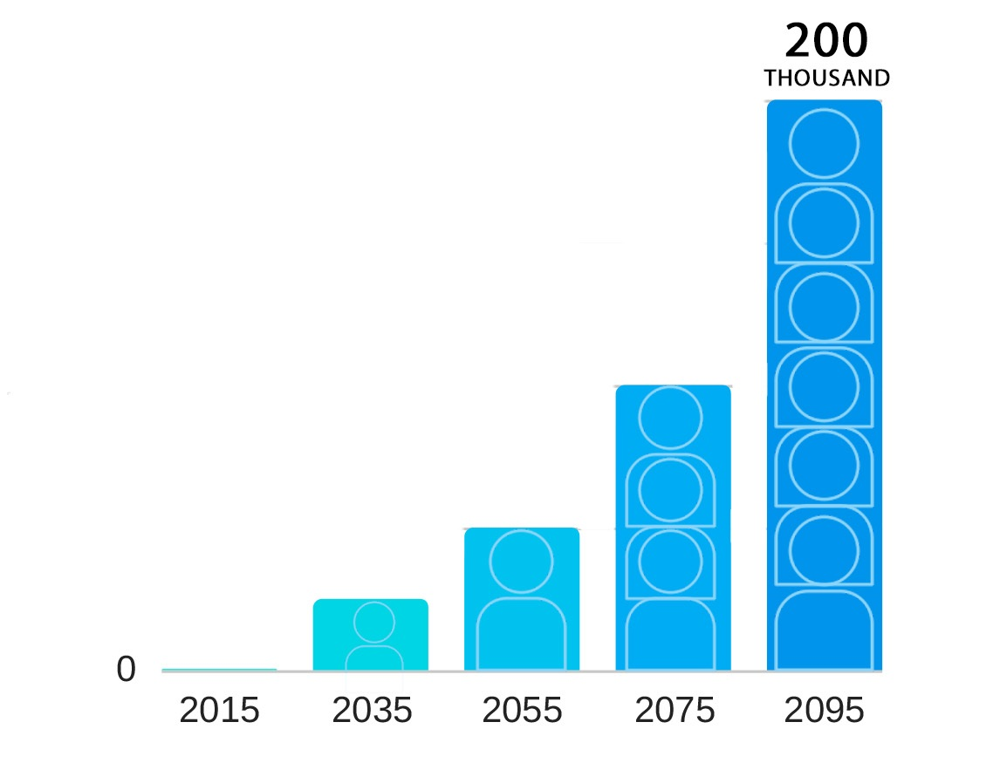

1) Sydney Airport, 2) Byron Bay, and 3) Sydney's Northern Beaches

living |
| Locations under threat of being inundated include: 1) Sydney Airport, 2) Byron Bay, and 3) Sydney's Northern Beaches |
Climate experts have said rising sea level can displace more than 200 thousand people |
|
 |
| The map below visualises the effect of sea level rise along Sydney's coastline with rising global temperatures. Data provided by Climate Central research. |
| Surging storms in Sydney's Northern Beaches caused significant erosion along the coastline. | Waves up to 8 meters high hit the coast, causing damage to neighbourhood backards. |
| What could this possibly mean to Sydney's population alongthe coast with this current rate of Global warming? | It is important to act now, to preserve our beaches and future inundation of Sydney. |